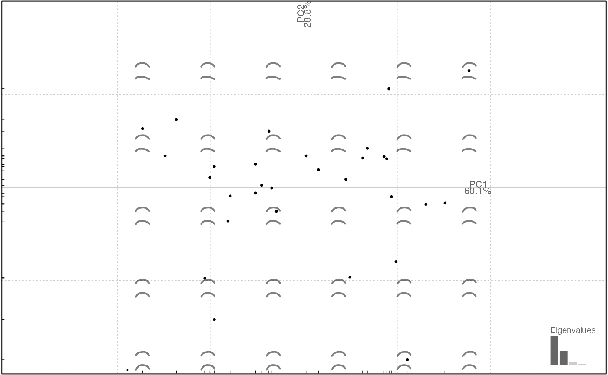

Rougher slicing that accepts a classifier
ie a column name from the $fac on Momocs classes.
Returns a named (after every level) list that can be lapply-ed and combined. See examples.
chop(.data, fac)
| .data | a |
|---|---|
| fac | a column name from the |
a named list of Coo or Coe objects
Other handling functions: arrange,
at_least, combine,
dissolve, filter,
mutate, rename,
rescale, rm_harm,
rm_uncomplete, rw_fac,
sample_frac, sample_n,
select, slice,
subset.Coo, table
olea %>% filter(var == "Aglan") %>% # to have a balanced nb of 'view' chop(view) %>% # split into a list of 2 lapply(npoly) %>% # separately apply npoly combine %>% # recombine PCA %>% plot # an illustration of the 2 views#>#>#>#># treated separately